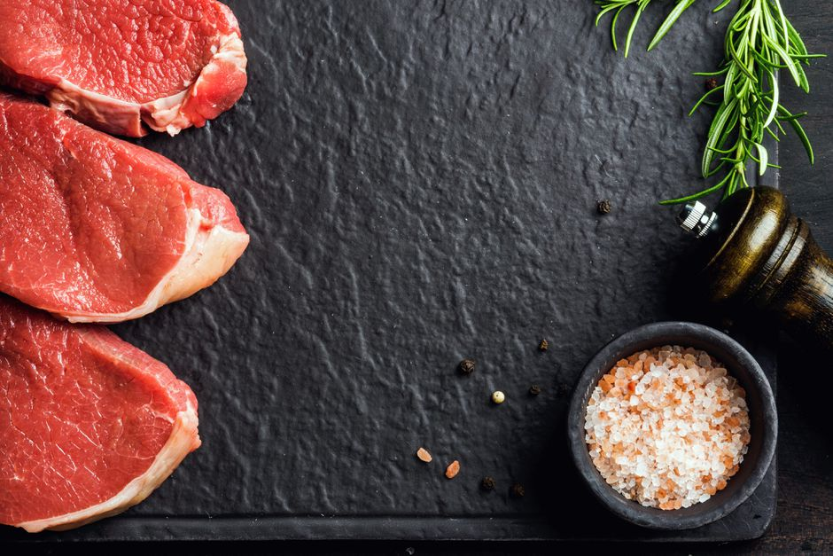

Bubba's Swiss Steak

Description
This variation of the classic family favorite swiss steak
features simmered round steak, and is served
with stewed tomatoes. Another delicious version
is cooked in a crockpot or slow cooker.
Ingredients
- 1 1/2 to 2 pounds round steak about 1 inch thick
- 2 tablespoons fine dry bread crumbs
- 2 teaspoons salt
- 1/4 teaspoon pepper
- 1 tablespoon butter or margarine
- 14.5 ounces canned or homemade stewed tomatoes
- 2 cups thinly sliced onions
- 1/4 cup chopped celery
- 1/4 cup chopped green bell pepper
- 1 clove garlic, smashed and minced
- 1 tablespoon Worcestershire sauce
Steps
- In a small bowl combine bread crumbs, salt, and pepper. Place steak on a clean board or similar work/cutting surface
- Sprinkle steak with about half of the bread crumb mixture and pound into the steak with a meat mallet
- Repeat on the other side of the round steak then cut into 4 to 6 pieces
- In a large Dutch oven or large deep skillet over medium heat, melt butter or margarine. When hot, add steak; brown on both sides
- Add tomatoes, onion, chopped celery, chopped green bell peppers, garlic, and Worcestershire sauce
- Bring to a boil; reduce heat, cover, and simmer for about 2 hours, or until Swiss steak is tender